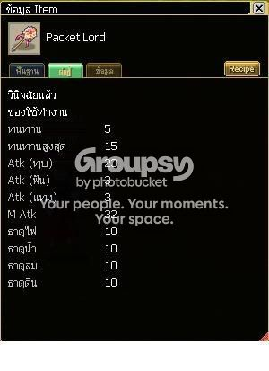

หน้า 1 จากทั้งหมด 1
ระหว่างคฑา noble rod กับ คฑา bucket ?

โพสต์แล้ว:
ศุกร์ 03 ส.ค. 2007 7:46 amโดย ECO
ระหว่างคฑา noble rod ที่เพิ่ม m.atk 38 กับ คฑา bucket rod(คฑาดอกไม้) เพิ่ม m.atk 32 กับทุกธาตุ +10
สองอย่างนี้อะไรจะแรงกว่ากันอะครับ :oops: ท่านผู้รู้ช่วยแนะนำหน่อย

โพสต์แล้ว:
ศุกร์ 03 ส.ค. 2007 8:37 amโดย ECO
:oops: อยากทราบว่าคุณเล่นอาชีพอะไรคะ
ถ้าคุณเป็นชาแมน ควรใช้คทา Bucket Lord ค่ะ
เพราะ Bucket Lord เพิ่มทุกธาตุ +10
มีผลกับอาชีพชาแมนโดยตรงเลยค่ะ
:arrow: แต่ว่าตรงนี้ขึ้นอยู่กับแผนที่
ที่คุณทำการเก็บเลเวลด้วยนะคะ
ว่าแผนที่นั้นๆ เป็นธาตุอะไรค่ะ :oops:
โพสต์แล้ว:
ศุกร์ 03 ส.ค. 2007 11:15 amโดย ECO
ขอบคุณมากงับ
พอดีเป็นชาแมน (ลืมบอกอาชีพ แหะๆ)
สรุปว่าคฑาดอกไม้จะดีกว่าใช่ไหมครับ?
:oops: จะได้ไปหาซื้อ (แพงเป่าหว่า? :cry: )
โพสต์แล้ว:
ศุกร์ 03 ส.ค. 2007 1:30 pmโดย ECO
ตามนั้นครับ
ผมใช้ noble rod (ตอนนี้เปลี่ยนแล้ว)
เพราะผมเล่น Wizard ธาตุไม่มีประโยชน์ครับ
โพสต์แล้ว:
ศุกร์ 03 ส.ค. 2007 9:53 pmโดย ECO
[GM]เป๊ปเป้ เขียน: :oops: อยากทราบว่าคุณเล่นอาชีพอะไรคะ
ถ้าคุณเป็นชาแมน ควรใช้คทา Bucket Rod ค่ะ
เพราะ Bucket Rod เพิ่มทุกธาตุ +10
มีผลกับอาชีพชาแมนโดยตรงเลยค่ะ
:arrow: แต่ว่าตรงนี้ขึ้นอยู่กับแผนที่
ที่คุณทำการเก็บเลเวลด้วยนะคะ
ว่าแผนที่นั้นๆ เป็นธาตุอะไรค่ะ :oops:
เรียนถาม ท่านจีเอ็ม ที่เพิ่มทุกธาตุ+10 นี้หมายความว่า อย่างไร รบกวน อธิบายละเอียดๆหน่อยก็จะเป็นพระคุณครับ ขอบคุณมาครับ
โพสต์แล้ว:
จันทร์ 06 ส.ค. 2007 9:19 amโดย ECO
:oops: คทาที่ + ค่าธาตุนั้น เหมาะกับอาชีพ Shaman ค่ะ
เพราะ Shaman จะใช้ธาตุทั้ง 4 เป็นธาตุในการโจมตี
ดังนั้นถ้าใช้ คทาที่ + เพิ่มธาตุ ก็จะทำให้สกิลโจมตีของ Shaman
มีความแรงเพิ่มขึ้นตามธาตุนั้นๆ ค่ะ
ยกตัวอย่างคทาที่มี + เพิ่มธาตุ ดังภาพค่ะ

โพสต์แล้ว:
พุธ 08 ส.ค. 2007 12:53 amโดย ECO
จากที่เราเคยใช้นะ เราว่ามันก็แรงพอๆ กันอ่ะ = = เราก็ใช้สลับไปมาๆ ระหว่างคทา 30, 35 แล้วก็คทาดอกไม้ สลับจนเลเวล 45 เลยอ่ะ (แบบว่าหาคทา 40 ไม่ได้ ก็ใช้ยาวจนเลเวล 45) แต่เราก็ไม่เห็นว่า dmg มันจะต่างกันจนเห็นได้ชัดเท่าไหร่ ส่วนตัวเราเอง (ย้ำว่าเราเองคนเดียว) ไม่เห็นความแตกต่างของคทา 3 อันนี้เลย นอกจากตอนที่เลเวลอัพแล้วเรากดอัพ point ได้ bonus matk มา นั่นสิต่างเห็นๆ @.@
ไม่รู้สิแล้วแต่ชอบ + งบก็แล้วกัน
โพสต์แล้ว:
พฤหัสฯ. 09 ส.ค. 2007 11:33 amโดย ECO
Zazzy เขียน:จากที่เราเคยใช้นะ เราว่ามันก็แรงพอๆ กันอ่ะ = = เราก็ใช้สลับไปมาๆ ระหว่างคทา 30, 35 แล้วก็คทาดอกไม้ สลับจนเลเวล 45 เลยอ่ะ (แบบว่าหาคทา 40 ไม่ได้ ก็ใช้ยาวจนเลเวล 45) แต่เราก็ไม่เห็นว่า dmg มันจะต่างกันจนเห็นได้ชัดเท่าไหร่ ส่วนตัวเราเอง (ย้ำว่าเราเองคนเดียว) ไม่เห็นความแตกต่างของคทา 3 อันนี้เลย นอกจากตอนที่เลเวลอัพแล้วเรากดอัพ point ได้ bonus matk มา นั่นสิต่างเห็นๆ @.@
ไม่รู้สิแล้วแต่ชอบ + งบก็แล้วกัน
ไม่รู้นะ ผมว่ามัน เบากว่าด้วยซ้ำ เลยมาถามว่า ที่+ธาตุ นั้นความหมายชัดๆคืออะไรกันแน่
โพสต์แล้ว:
ศุกร์ 10 ส.ค. 2007 7:04 pmโดย ECO
noble rod แรงกว่าแน่นอนค่ะ
เพราะ +10 ธาตุไม่ได้หมายถึงพลังโจมตีแต่หมายถึงเกราะ